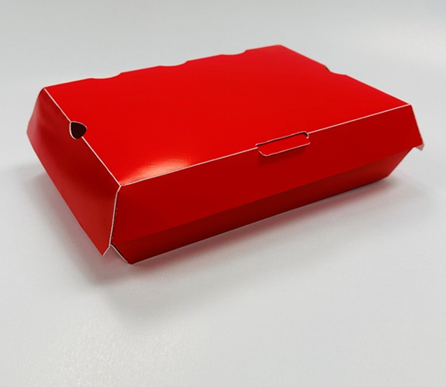

Food-grade materials
Paperboard and barrier materials selected for direct and indirect food-contact applications.
Custom food packaging
Custom cartons that balance product protection, regulatory requirements and strong brand presence across the food aisle.

Food packaging capabilities
Goldrich brings material, coating and regulatory decisions into the design process from the start, helping food products arrive intact and look right at retail.
Paperboard and barrier materials selected for direct and indirect food-contact applications.
Moisture barriers and grease-resistant treatments for baked goods, prepared foods and frozen products.
Clear space and production support for dates, batches, allergens and required product information.
Recyclable, biodegradable and compostable paper-based options designed around real performance needs.

Award-winning innovation
The formed paperboard clamshell eliminates assembly and wax paper while delivering grease resistance, leak protection and a compostable end-of-life path.
Goldrich works with FDA and Health Canada requirements, food-grade materials, coatings and labelling considerations during design and production.
Options include moisture barriers and grease-resistant treatments selected to match the product, distribution environment and food-contact requirements.
Yes. Goldrich can store finished packaging and coordinate scheduled shipments, inventory and batch requirements from its Toronto facility.
Explore other industries
Share the product, quantity, timing and performance requirements. Minimum order quantity is 10,000 units.